ถ่ายจากระบบจริงที่ใช้งานอยู่ทุกวัน เรียงตามลำดับการทำงาน: ลูกค้าสั่งผ่านมือถือ บอร์ดแคชเชียร์รับและเปลี่ยนสถานะเรียลไทม์ หน้าครัวเห็นออเดอร์พร้อมโน้ต เช็คบิลหลายสกุลเงิน ประวัติการเงิน หลังบ้านจัดการเมนู และระบบสต๊อกตัดของอัตโนมัติ
เปิดจากมือถือที่โต๊ะ เลือกภาษา (ไทย/อังกฤษ) เข้าเมนูแยกหมวด ราคาแสดง USD/MVR อัตโนมัติ
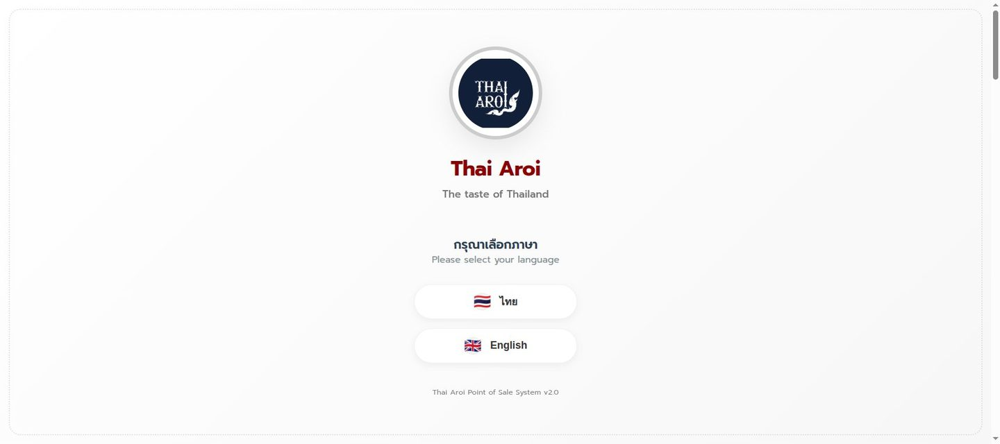
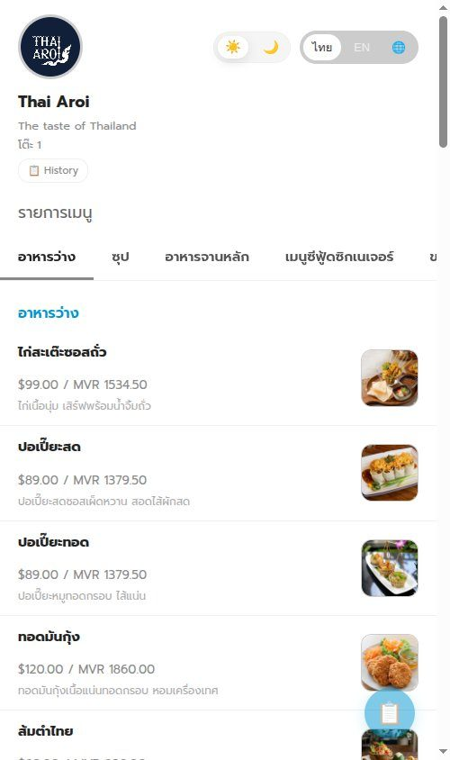
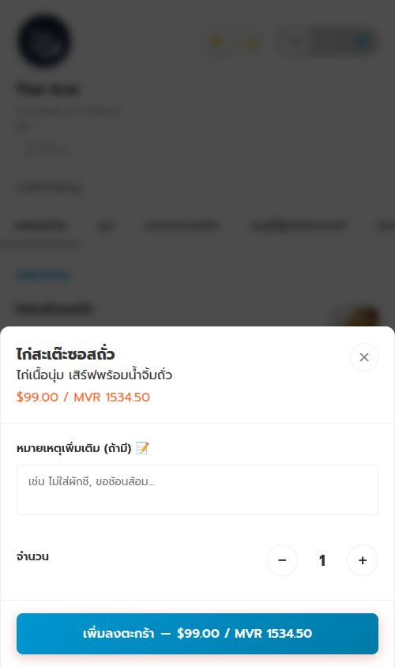
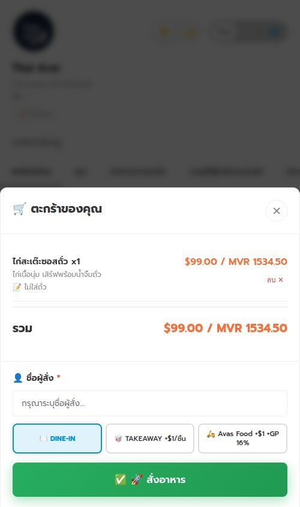
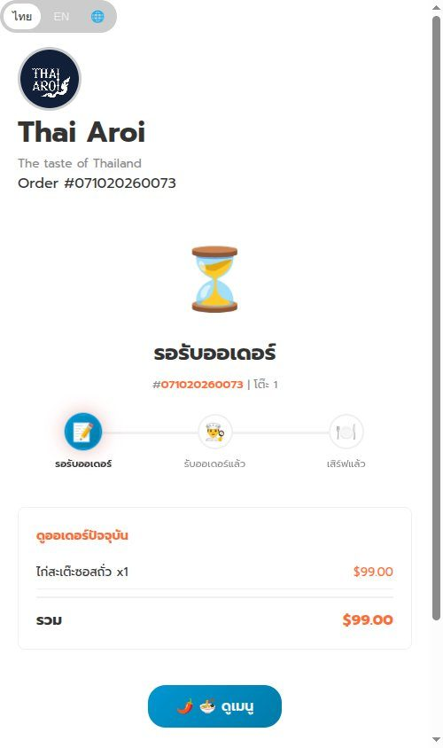
ออเดอร์ใหม่โผล่ที่คอลัมน์ "รอรับ" ทันทีที่ลูกค้ากดสั่ง กดรับ → ย้ายไป "กำลังเสิร์ฟ" → เสิร์ฟ → เข้าคอลัมน์ "บิล"
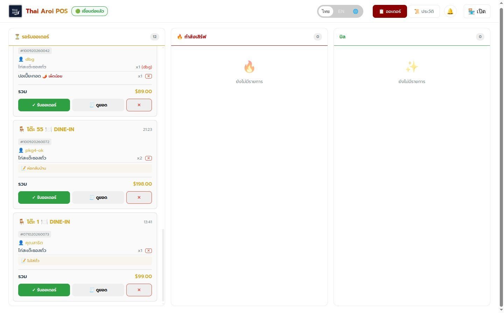
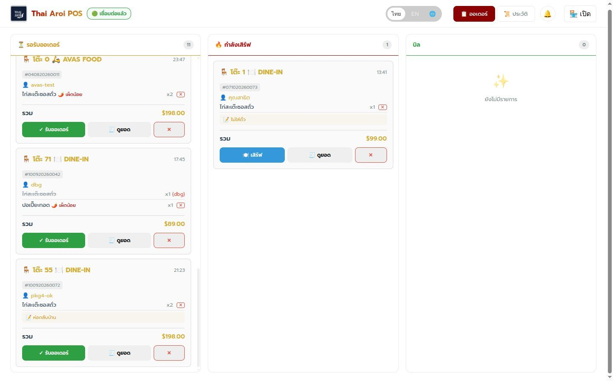
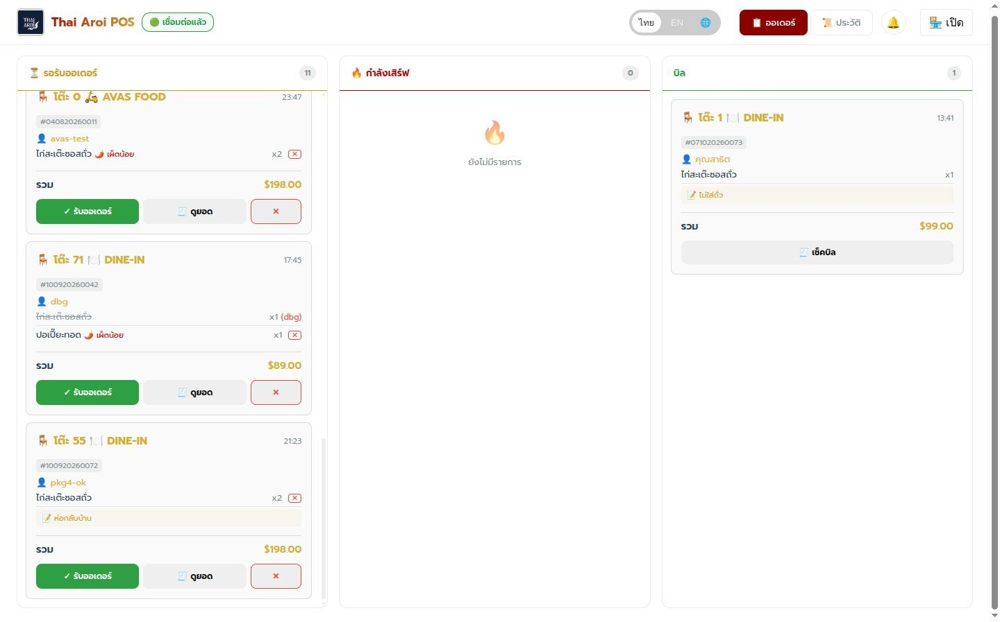
ใบเสร็จคำนวณ Service Charge + Tax และแสดงรวมทั้ง USD/MVR รับเงินคิดเงินทอนอัตโนมัติ มีส่วนลด VIP และบิล $0 (ยืนยันด้วย PIN ผู้จัดการ)
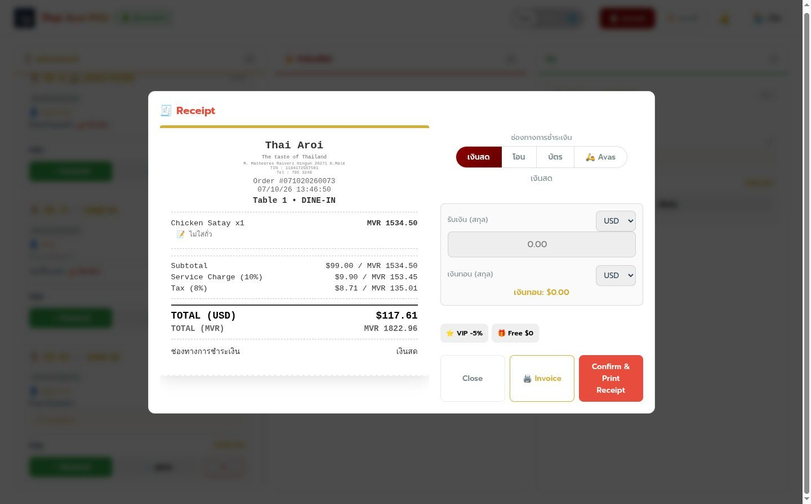
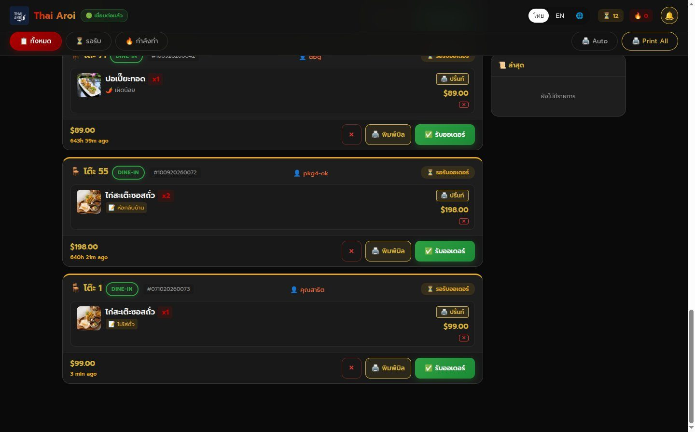
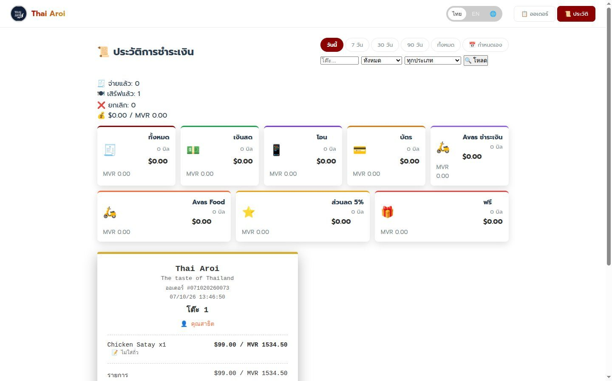
เพิ่ม/แก้เมนูและหมวดหมู่ ชื่อเก็บแยก 3 ภาษา (ไทย/EN/中) อัปโหลดรูปเอง ส่วนสต๊อกตัดของตามสูตรอาหารอัตโนมัติเมื่อขาย
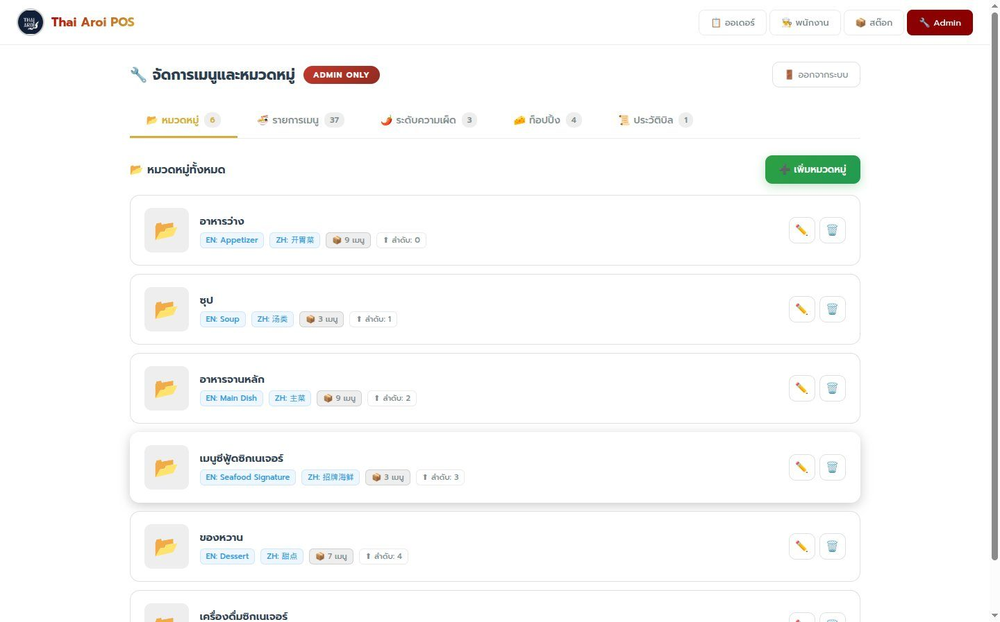
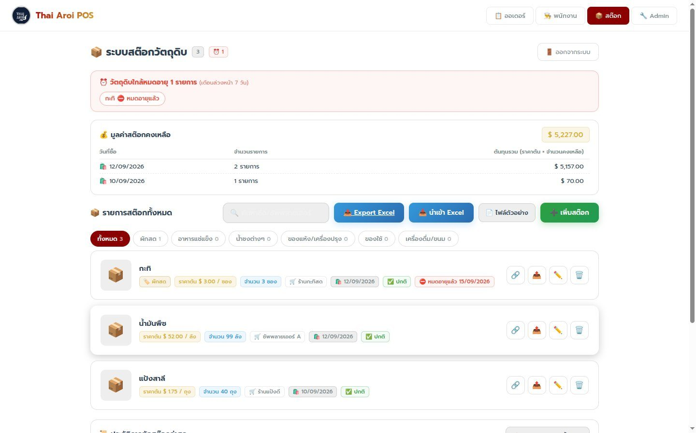